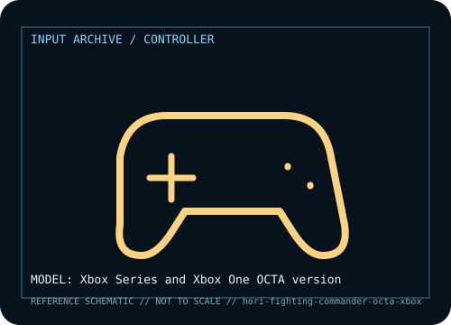

[ GAME CONTROLLERS // IDENTIFIED COMPONENT ]
HORI Fighting Commander OCTA for Xbox
Six-button fighting-game pad with short-throw D-pad, configurable stick and profiles.

MODEL IDENTIFICATION: Manufacturer model / identifier: Xbox Series and Xbox One OCTA version. Compare the unit label, regional suffix, and revision against manufacturer documentation before repair or compatibility claims.
Model specifications
| Catalog subcategory | Game controllers |
|---|---|
| Exact model / ID | Xbox Series and Xbox One OCTA version |
| Model-specific features | Six face buttons, short-throw D-pad, analog stick, assignable controls; licensed platform versions differ. |
| Interface and host support | Wired USB for licensed Xbox/Windows version; Device Manager and game API affect remapping. |
| Revision / driver caveat | Xbox and PlayStation OCTA are distinct SKUs; verify platform badge and licensing. |
Preservation and service notes
Inspect cable, D-pad diagonals and button rebound; preserve Device Manager profile before updates.
Record the as-found label, accessories, host OS, driver or firmware version, and test method. Separate observed condition from published specifications; family-level claims are not proof of an individual unit's revision.
Manufacturer source
- HORI Fighting Commander OCTA for Xbox — manufacturer model pageModel-specific manufacturer reference for identifying specifications, regional SKU, and linked current support documentation.
Manufacturer pages can change or retire. Preserve the applicable manual and note its revision when documenting a physical device.